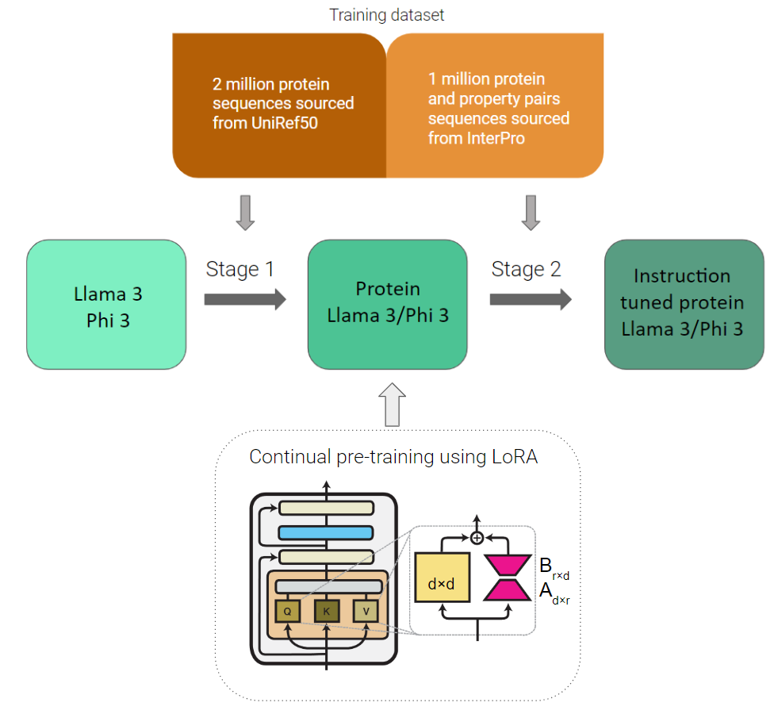

Protein language models on RISC-V
Esperanto article · Phi-3 model on Hugging Face
An exploration of parameter-efficient training and energy-efficient inference for biological foundation models.
- Throughput / watt
- 3.3×
- Training time
- −70%
- Venue
- AAAI ’25

Why this project
Protein language models are useful precisely where compute can become expensive: long sequences, large encoders, and structure-prediction pipelines. I wanted to understand how much of that workload could move onto a power-efficient RISC-V accelerator without treating the model or the hardware as a black box.
Approach

- Adapted biological foundation models using LoRA instead of full fine-tuning.
- Used multi-GPU distributed data parallel training to shorten experiment cycles.
- Exported and profiled models through PyTorch and ONNX for accelerator deployment.
- Evaluated both learned protein representations and ESMFold structure predictions.
Results
For the measured Phi-3 workload, the RISC-V system produced 3.3× higher throughput per watt than the A100 baseline. LoRA together with distributed training reduced training time by roughly 70%. The structure-prediction evaluation reached a pLDDT of 69.75 and a TM-score of 0.81.
What I learned
“Efficient model” and “efficient hardware” cannot be evaluated independently. Operator support, export constraints, precision, memory movement, and the shape of the workload decide whether a theoretical advantage survives deployment.